Hektor Demo
Alla 14 bilder i ordning. Svensk konceptpresentation, 2:30 minuter utan ljud. Exemplen beskriver tänkta flöden, inte en driftsatt telefonintegration.
Bild 1 av 14 · 0:00–0:08
Hektor Demo
En gemensam agent för webbchatt, telefon och personalens diktering. Målet är att hjälpa kunder och avlasta teamet.
Visa bild 1 och texten i bilden
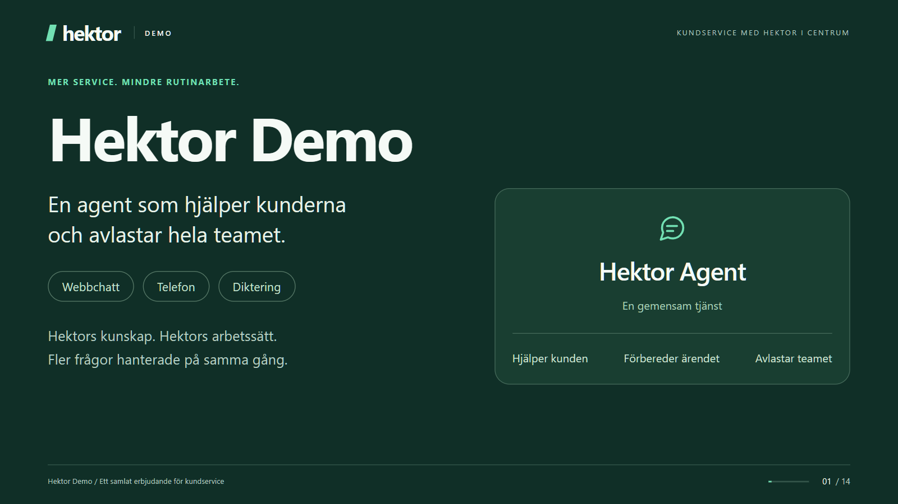
En agent som hjälper kunderna och avlastar hela teamet. Webbchatt Telefon Diktering Hektors kunskap. Hektors arbetssätt. Fler frågor hanterade på samma gång. Hektor Agent En gemensam tjänst Hjälper kunden Förbereder ärendet Avlastar teamet
Bild 2 av 14 · 0:08–0:18
Snabbare hjälp. En enklare kundvardag.
Vanliga frågor kan få svar även utanför bemannad support. Flera kunder kan få hjälp samtidigt, med en tydlig väg till en människa.
Visa bild 2 och texten i bilden
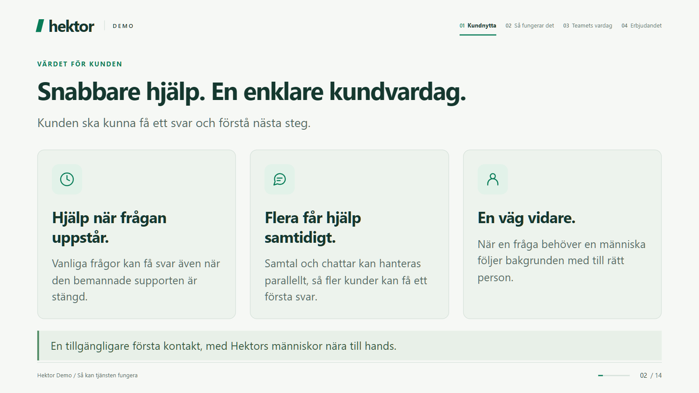
Kunden ska kunna få ett svar och förstå nästa steg. Hjälp när frågan uppstår. Vanliga frågor kan få svar även när den bemannade supporten är stängd. Flera får hjälp samtidigt. Samtal och chattar kan hanteras parallellt, så fler kunder kan få ett första svar. En väg vidare. När en fråga behöver en människa följer bakgrunden med till rätt person. En tillgängligare första kontakt, med Hektors människor nära till hands.
Bild 3 av 14 · 0:18–0:28
Samma frågor. Mindre dubbelarbete.
Återanvänd godkänd kunskap för svar, vägledning och dokumentation. Frigör tid för frågor som behöver erfarenhet och personlig kontakt.
Visa bild 3 och texten i bilden
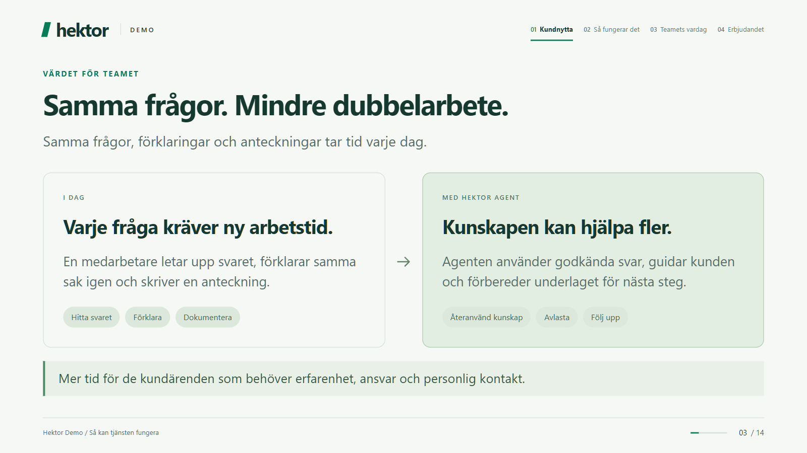
Samma frågor, förklaringar och anteckningar tar tid varje dag. I DAG Varje fråga kräver ny arbetstid. En medarbetare letar upp svaret, förklarar samma sak igen och skriver en anteckning. Hitta svaret Förklara Dokumentera MED HEKTOR AGENT Kunskapen kan hjälpa fler. Agenten använder godkända svar, guidar kunden och förbereder underlaget för nästa steg. Återanvänd kunskap Avlasta Följ upp Mer tid för de kundärenden som behöver erfarenhet, ansvar och personlig kontakt.
Bild 4 av 14 · 0:28–0:36
En agent. Tre sätt att skapa nytta.
Chatt och telefon hjälper kunden. Diktering hjälper medarbetaren att förbereda en ärendeanteckning.
Visa bild 4 och texten i bilden
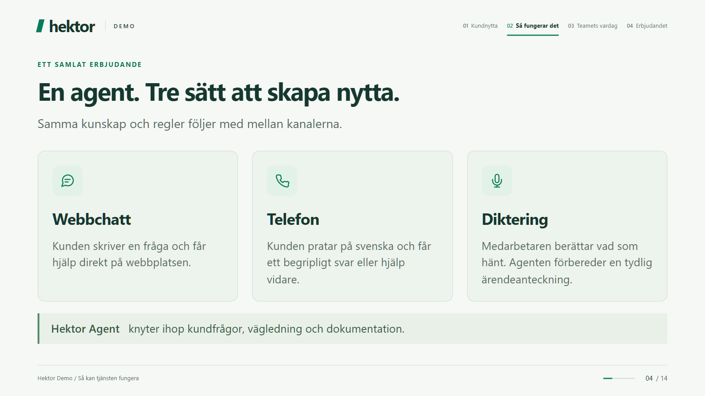
Samma kunskap och regler följer med mellan kanalerna. Webbchatt Kunden skriver en fråga och får hjälp direkt på webbplatsen. Telefon Kunden pratar på svenska och får ett begripligt svar eller hjälp vidare. Diktering Medarbetaren berättar vad som hänt. Agenten förbereder en tydlig ärendeanteckning. Hektor Agent knyter ihop kundfrågor, vägledning och dokumentation.
Bild 5 av 14 · 0:36–0:48
Så kan kunden få hjälp i chatten.
Ett illustrativt svar om wifi-samtal visar hur kunden kan få en begriplig förklaring med stöd i Hektors information och möjlighet att kontakta supporten.
Visa bild 5 och texten i bilden
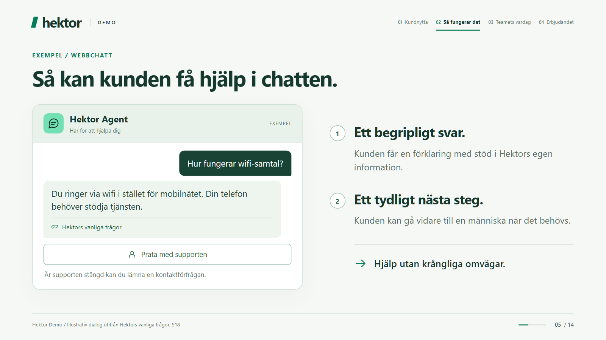
Hektor Agent Här för att hjälpa dig EXEMPEL Hur fungerar wifi-samtal? Du ringer via wifi i stället för mobilnätet. Din telefon behöver stödja tjänsten. Hektors vanliga frågor Prata med supporten Är supporten stängd kan du lämna en kontaktförfrågan. 1 Ett begripligt svar. Kunden får en förklaring med stöd i Hektors egen information. 2 Ett tydligt nästa steg. Kunden kan gå vidare till en människa när det behövs. Hjälp utan krångliga omvägar.
Bild 6 av 14 · 0:48–0:58
Hektors kunskap bakom varje svar.
Hektor väljer informationen: vanliga frågor, vägledning, tjänster och villkor. Hektor bestämmer också när en människa tar över.
Visa bild 6 och texten i bilden

Kunderna ska få hjälp utifrån den information ni står bakom. HEKTORS UNDERLAG Vanliga frågor & vägledning Tjänster & villkor HEKTOR AGENT Hitta svaret. Förklara enkelt. KUNDENS NYTTA Lättare att förstå. Ett svar som hjälper kunden vidare. Hektors egen information Hektor bestämmer. Ni godkänner svar, regler och när en människa tar över.
Bild 7 av 14 · 0:58–1:14
Samma hjälp, även när kunden ringer.
Det svenska exempelsamtalet besvarar en allmän fråga om wifi-samtal. När kunden frågar om sitt abonnemang är agenten tydlig med att den saknar åtkomst och hjälper kunden vidare.
Visa bild 7 och texten i bilden
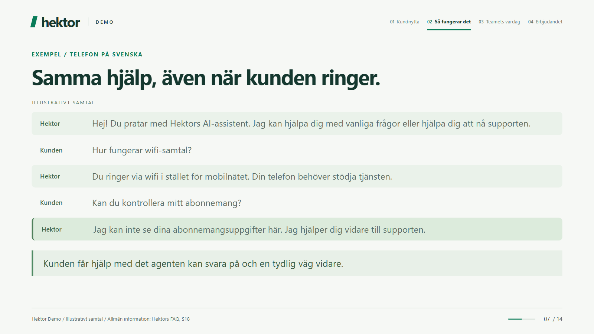
ILLUSTRATIVT SAMTAL Hektor Hej! Du pratar med Hektors AI-assistent. Jag kan hjälpa dig med vanliga frågor eller hjälpa dig att nå supporten. Kunden Hur fungerar wifi-samtal? Hektor Du ringer via wifi i stället för mobilnätet. Din telefon behöver stödja tjänsten. Kunden Kan du kontrollera mitt abonnemang? Hektor Jag kan inte se dina abonnemangsuppgifter här. Jag hjälper dig vidare till supporten. Kunden får hjälp med det agenten kan svara på och en tydlig väg vidare.
Bild 8 av 14 · 1:14–1:26
Nästa kollega får med sig bakgrunden.
Ett föreslaget supportunderlag samlar kundens önskemål, det som förklarats och nästa steg. Exemplet visar uttryckligen att ingen abonnemangskontroll har gjorts.
Visa bild 8 och texten i bilden
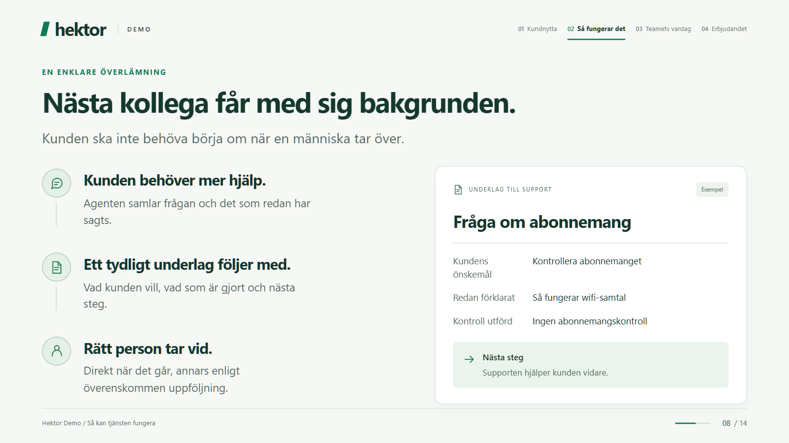
Kunden ska inte behöva börja om när en människa tar över. Kunden behöver mer hjälp. Agenten samlar frågan och det som redan har sagts. Ett tydligt underlag följer med. Vad kunden vill, vad som är gjort och nästa steg. Rätt person tar vid. Direkt när det går, annars enligt överenskommen uppföljning. UNDERLAG TILL SUPPORT Exempel Fråga om abonnemang Kundens önskemål Kontrollera abonnemanget Redan förklarat Så fungerar wifi-samtal Kontroll utförd Ingen abonnemangskontroll Nästa steg Supporten hjälper kunden vidare.
Bild 9 av 14 · 1:26–1:38
Berätta vad som hänt. Få anteckningen klar.
Medarbetaren dikterar. Hektor förbereder texten. Medarbetaren granskar och rättar innan en godkänd anteckning sparas genom en behörig koppling.
Visa bild 9 och texten i bilden
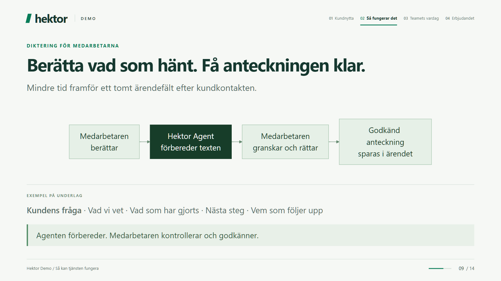
Mindre tid framför ett tomt ärendefält efter kundkontakten. EXEMPEL PÅ UNDERLAG Kundens fråga · Vad vi vet · Vad som har gjorts · Nästa steg · Vem som följer upp Agenten förbereder. Medarbetaren kontrollerar och godkänner.
Bild 10 av 14 · 1:38–1:48
Hektor sätter gränserna.
Hektor godkänner information, åtkomst och mänsklig uppföljning. Personlig support kräver godkända kopplingar, identitetskontroll och rätt behörighet.
Visa bild 10 och texten i bilden
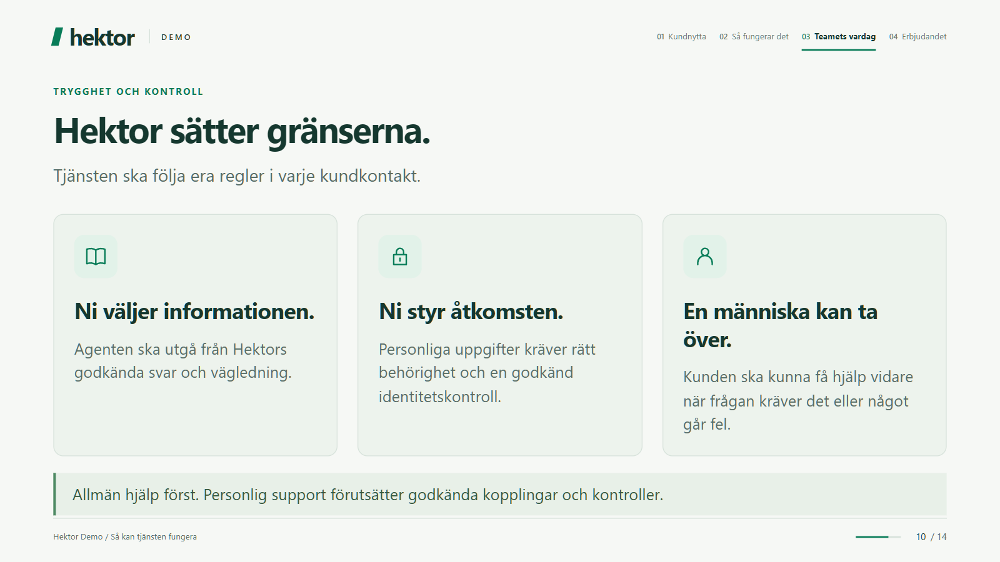
Tjänsten ska följa era regler i varje kundkontakt. Ni väljer informationen. Agenten ska utgå från Hektors godkända svar och vägledning. Ni styr åtkomsten. Personliga uppgifter kräver rätt behörighet och en godkänd identitetskontroll. En människa kan ta över. Kunden ska kunna få hjälp vidare när frågan kräver det eller något går fel. Allmän hjälp först. Personlig support förutsätter godkända kopplingar och kontroller.
Bild 11 av 14 · 1:48–1:58
Agenten tar rutinen. Teamet tar det vidare.
Agenten kan förklara vanliga frågor, guida och förbereda underlag. Teamet behåller ansvar för undantag, känsliga frågor, beslut och kundrelationer.
Visa bild 11 och texten i bilden
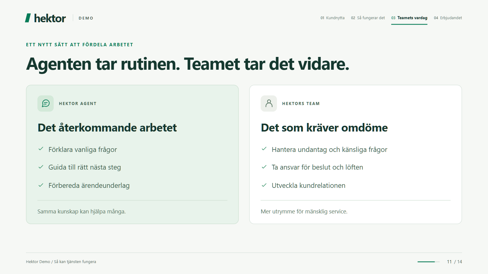
HEKTOR AGENT Det återkommande arbetet Förklara vanliga frågor Guida till rätt nästa steg Förbereda ärendeunderlag Samma kunskap kan hjälpa många. HEKTORS TEAM Det som kräver omdöme Hantera undantag och känsliga frågor Ta ansvar för beslut och löften Utveckla kundrelationen Mer utrymme för mänsklig service.
Bild 12 av 14 · 1:58–2:08
Fler kundkontakter med samma team.
En gemensam tjänst kan avlasta flera medarbetare. Kapaciteten behöver anpassas till trafik och avtal; presentationen visar ingen uppmätt automatiseringsgrad.
Visa bild 12 och texten i bilden
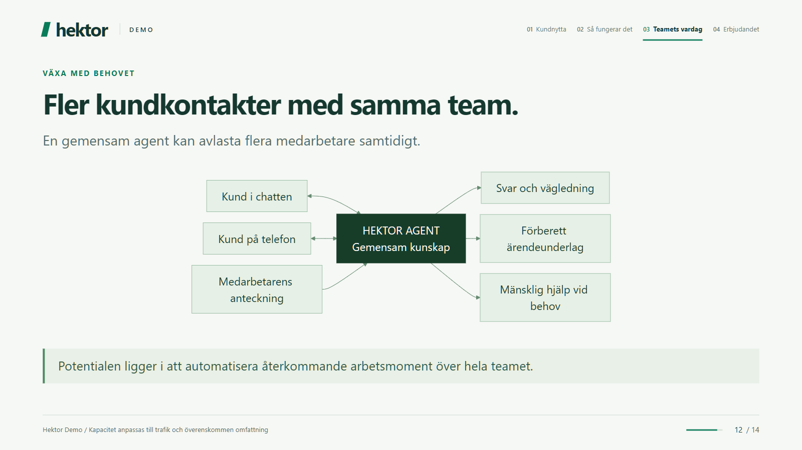
En gemensam agent kan avlasta flera medarbetare samtidigt. Potentialen ligger i att automatisera återkommande arbetsmoment över hela teamet.
Bild 13 av 14 · 2:08–2:18
Det här är värdet för Hektor.
Tillgängligare kundservice, mindre återkommande arbete, enklare dokumentation och fortsatt kontroll hos Hektor.
Visa bild 13 och texten i bilden
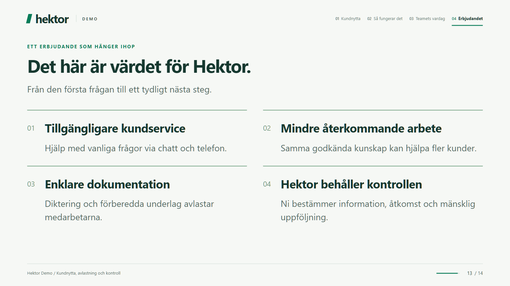
Från den första frågan till ett tydligt nästa steg. 01 Tillgängligare kundservice Hjälp med vanliga frågor via chatt och telefon. 02 Mindre återkommande arbete Samma godkända kunskap kan hjälpa fler kunder. 03 Enklare dokumentation Diktering och förberedda underlag avlastar medarbetarna. 04 Hektor behåller kontrollen Ni bestämmer information, åtkomst och mänsklig uppföljning.
Bild 14 av 14 · 2:18–2:30
En agent. Värde för ett helt team.
Erbjudandets inriktning är en agent till kostnaden av en supportmedarbetare, med potential att automatisera ett helt teams återkommande arbete. Omfattning och kostnadsram preciseras i offert. Effekten är ännu inte uppmätt.
Visa bild 14 och texten i bilden
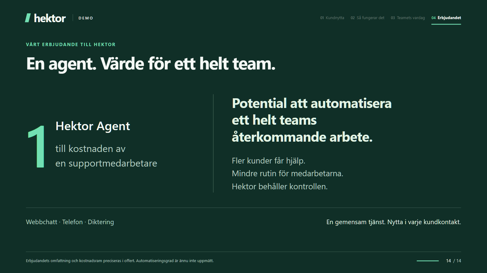
1 Hektor Agent till kostnaden av en supportmedarbetare Potential att automatisera ett helt teams återkommande arbete. Fler kunder får hjälp. Mindre rutin för medarbetarna. Hektor behåller kontrollen. Webbchatt · Telefon · Diktering En gemensam tjänst. Nytta i varje kundkontakt.
Underlag: Hektor Demo, grenen hektor-demo-sv, revision b287401. Information om inspelningen.